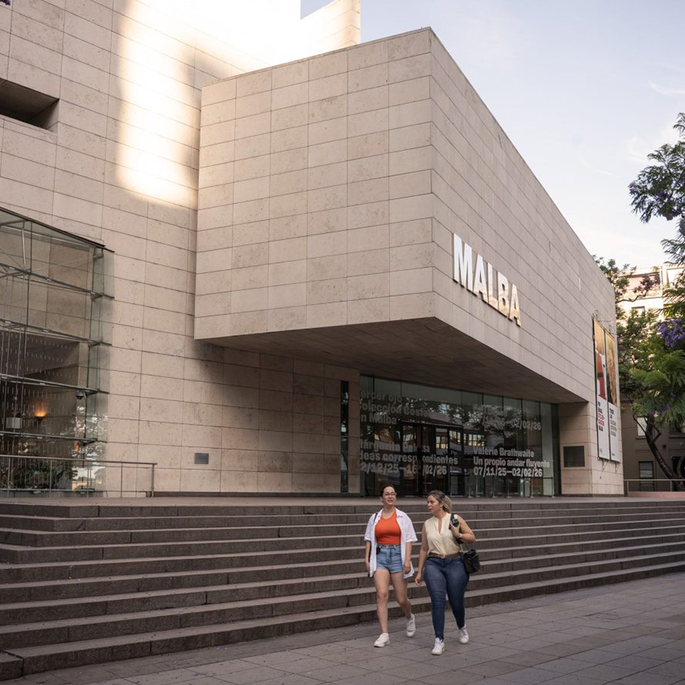
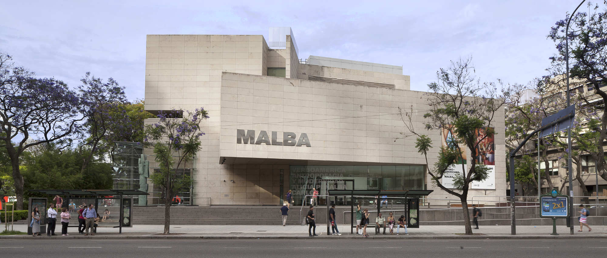

HISTORIA
Desde Arte en América Latina, la exposición con la cual Malba abrió sus puertas en septiembre de 2001, la colección del museo ha tenido una importante transformación y proyección. El acervo del museo se inició con la donación realizada por Eduardo F. Costantini de las doscientas veinte piezas de arte latinoamericano que integraban su colección particular. En el transcurso de estas décadas, el conjunto se fue enriqueciendo con nuevas donaciones y adquisiciones, y gracias a las investigaciones de las propuestas curatoriales y editoriales, que le han ido otorgando un sustrato denso de aproximaciones críticas. Malba ha construido una diversidad de reflexiones sobre su colección, su propia configuración y relato. La génesis del acervo de Malba se basa en el perfil de coleccionista consolidado por Eduardo F. Costantini durante los años 90. Costantini ha expresado que su estrategia se basa en la adquisición de piezas destacadas en términos de circulación histórica de artistas canónicos del arte latinoamericano. Asimismo, desde su accionar participa en redes globalizadas del arte y adquiere visibilidad a través de los medios de comunicación. Hoy, la Colección Malba cuenta con más de 750 piezas y se ha consolidado como una referencia mundial del arte latinoamericano.
EXHIBICIÓN ACTUAL
Tercer ojo Colección Costantini en Malba
2022—2026
Una exposición que reúne más de 220 obras icónicas del arte latinoamericano en un recorrido que pone en diálogo la Colección Malba y la de su fundador, Eduardo F. Costantini. La muestra propone el despliegue de un acervo en transformación que va cambiando de forma a lo largo del tiempo, iluminando los momentos claves del arte de la región en diálogo con temas artísticos y sociales tanto históricos como contemporáneos.
AGENDA
HORARIOS
- Lunes: 12:00 a 20:00.
- Martes: Cerrado
- Miércoles: 11:00 a 20:00.
- Jueves: 12:00 a 20:00.
- Viernes: 12:00 a 20:00.
- Sábados: 12:00 a 20:00.
- Domingos: 12:00 a 20:00.
Los días 24 y 31 de diciembre, el museo cierra a las 18:00. El 25 de diciembre y el 1 de enero el museo está cerrado. Las salas permanecen abiertas hasta aproximadamente 15 minutos antes del cierre del museo.